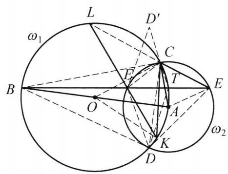

81 例 6：双圆交点与共圆四边形垂直证明
81.1 题目
如图,以 {AB} 为直径的圆 {\omega }_1 和以 A 为圆心的圆 {\omega }_2 相交于 C, D 两点, 点 E 在圆 {\omega }_2 上( E 在 {\omega }_1 外且和点 C 在直线 {AB} 同侧). {BE} 与 {\omega }_2 交于另一点 F ， 点 K 在 {\omega }_1 上且满足 {2CK} \cdot {AC} = {CE} \cdot {AB} (点 K 与点 A 在过点 C 的圆 {\omega }_1 的直径的同一侧), {KF} 与 {\omega }_1 交于另一点 L, D 关于 {BE} 的对称点为 {D}^{\prime } . 证明: L, F, C , {D}^{\prime } 四点共圆.

图 5-10
81.2 参考解答
如图 5-10,由题设条件 {2CK} \cdot {AC} = \; {CE} \cdot {AB} 得 \frac{CK}{CE} = \frac{CO}{AC} = \frac{KO}{AE} ,所以 \triangle {OCK} \backsim \; \triangle {ACE} ,于是
\angle {CLF} = \frac{1}{2}\angle {COK} = \frac{1}{2}\angle {CAE} = \angle {CFE}.
在 {EF} 上取一点 T ,使得
\frac{FT}{FD} = \frac{CE}{CD}.
①
因为 \angle {DFT} = \angle {DCE} ，所以 \triangle {DFT} \backsim \triangle {DCE} ，则 \angle {FDT} = \angle {CDE} = \; \angle {CFE} . 又因为 \angle {DET} = \angle {DCF} ， \angle {DTE} = {180}^{ \circ } - \angle {DTF} = {180}^{ \circ } - \angle {DEC} = \; \angle {DFC} ,故 \triangle {DTE} \backsim \triangle {DFC} ,于是
\frac{ET}{DE} = \frac{CF}{CD}.
②
因为 \angle {BCA} = \angle {BDA} = {90}^{ \circ } ，所以， {BD},{BC} 是圆 {\omega }_2 的切线，于是 \triangle {BFC} \backsim \; \triangle {BCE}, \triangle {BFD} \backsim \triangle {BDE} ，则
\frac{CE}{CF} = \sqrt{\frac{BE}{BF}} = \frac{DE}{DF}.
③
将①式除②式得 \frac{FT}{ET} \cdot \frac{DE}{DF} = \frac{CE}{CF} ，结合③得 {FT} = {ET} ，因此， \angle {ATB} = {90}^{ \circ } ，则点 T 在 {\omega }_1 上.
由 \overset{\text{ ⏜ }}{BC} = \overset{\text{ ⏜ }}{BD} 得 \angle {CTB} = \angle {DTB} = \angle {D}^{\prime }{TB} ,因此 T, C,{D}^{\prime } 三点共线，故 \angle F{D}^{\prime }C = \angle F{D}^{\prime }T = \angle {FDT} = \angle {CFT} = \angle {CLF} ,所以, L, F, C,{D}^{\prime } 四点共圆. 原问题得证.
注:由条件寻找相似三角形，通过四边形的性质联想到添出对角线的中点，进而通过分析性质，得出结论.
81.3 解题思路与分析
这份解答之所以让人觉得“费解”、像凭空变魔术，是因为作者把一个非常自然的“执果索因（逆向分析）”过程，利用“同一法”完全倒过来写了，并且隐藏了题目背后最核心的几何背景——调和四边形（Harmonic Quadrilateral）与托勒密定理（Ptolemy’s Theorem）的构造技巧。
整道题最让人摸不着头脑的地方在于：点 T 到底是怎么想出来的？ 解答中一上来就在 EF 上按比例 \frac{FT}{FD} = \frac{CE}{CD} 硬取了一个点 T，绕了一大圈相似三角形后，才突然发现 FT = ET（即 T 是中点），进而发现 \angle ATB = 90^\circ（即 T 在圆 \omega_1 上），最后才导出 T, C, D' 三点共线。
如果我们顺着自然的解题逻辑，把这个“倒着写”的证明还原成真实的探索过程，整道题的脉络会变得极其清晰：
81.3.1 第一步：剥离外围包装，消去点 K 和 L
观察题设中关于点 K 的条件：2CK \cdot AC = CE \cdot AB。 * 因为 AB 是圆 \omega_1 的直径（设圆心为 O），所以 AB = 2OC = 2OK；同时 AC = AE 是圆 \omega_2 的半径。 * 将 AB = 2OC 代入条件，立即化简为 \frac{CK}{OC} = \frac{CE}{AC}。 * 这意味着两个等腰三角形 \triangle OCK（OC=OK）和 \triangle ACE（AC=AE）的“底边与腰之比”相等，因此必然相似：\triangle OCK \sim \triangle ACE。 * 等腰三角形相似，顶角必然相等，即 \angle COK = \angle CAE。在两个圆中分别利用圆周角定理取一半，就得到了证明的第一行结论： \angle CLF = \frac{1}{2}\angle COK = \frac{1}{2}\angle CAE = \angle CFE
关键思维转折：走到这一步后，点 K 和点 L 的作用其实已经彻底结束了！ 因为我们要证 L, F, C, D' 四点共圆，等价于证 \angle FD'C = \angle CLF。既然已经算出了 \angle CLF = \angle CFE，原问题就被剥去了外壳，转化为一个纯粹关于圆 \omega_1, \omega_2 的核心几何问题： > 核心目标：已知 D' 是 D 关于 BE 的对称点，求证 \angle FD'C = \angle CFE。
81.3.2 第二步：处理对称点 D'——顺藤摸瓜找到点 T 的真实身份
在核心目标 \angle FD'C = \angle CFE 中，最大的障碍是点 D'：它是通过轴对称生成的孤立点，线段 CD' 看起来悬在空中，没有任何现成的圆或三角形依托。
处理轴对称（D 与 D' 关于 BE 对称）最自然的第一性原理是：在对称轴 BE 上找一个点 T，利用对称性把关于 D' 的角“折”回点 D 这一侧。
什么样的点 T 最理想？ 如果在对称轴 BE 上存在一个点 T，能使得 T, C, D' 三点共线，那就太完美了！因为一旦三点共线，射线 D'C 就是射线 D'T，由对称性（\triangle FTD' \cong \triangle FTD）立刻可以把 \angle FD'C 转移回 D 处： \angle FD'C = \angle FD'T = \angle FDT
怎么在 BE 上找到这个让 T, C, D' 共线的点 T？ 把“T, C, D' 共线”关于对称轴 BE 折回来分析：
- 直线 TD' 是直线 TD 关于 BE 的对称直线。
- 点 C 落在直线 TD' 上 \Longleftrightarrow 直线 TC 与直线 TD 关于 BE 对称 \Longleftrightarrow 直线 BE（即 TB）平分 \angle CTD（即 \angle CTB = \angle DTB）。
- 看到 \angle CTB = \angle DTB，再看一眼图中的圆 \omega_1：点 B, C, D 都在圆 \omega_1 上，且由两圆对称性知弧 \overset{\frown}{BC} = \overset{\frown}{BD}！
- 根据圆周角定理，圆 \omega_1 上任意一点对等弧 \overset{\frown}{BC} 和 \overset{\frown}{BD} 所张的圆周角都相等！
豁然开朗的瞬间：原来点 T 根本不是什么神秘的构造点，点 T 就是直线 BE 与圆 \omega_1 的另一个交点！ 只要取 T 为 BE 与 \omega_1 的交点，就天然有 \angle CTB = \angle DTB = \angle D'TB，从而 T, C, D' 自动三点共线，\angle FD'C 就自动等于 \angle FDT！
81.3.3 第三步：识别“调和四边形”与弦中点性质
现在我们知道了点 T 的真实身份（BE 与 \omega_1 的交点），继续挖掘它的几何性质： * 因为 AB 是 \omega_1 的直径，T 在 \omega_1 上，所以 \angle ATB = 90^\circ，即 AT \perp BE。 * 又因为 A 是圆 \omega_2 的圆心，FE 是 \omega_2 的弦，由垂径定理立知：点 T 恰好是弦 FE 的中点（FT = ET）！
此时，我们的目标 \angle FD'C = \angle CFE（注意到在 \omega_2 中同弧所对圆周角 \angle CFE = \angle CDE）已经完全转化为： > 最终归结：已知 T 是弦 FE 的中点，求证 \angle FDT = \angle CDE。
为什么弦 FE 的中点 T 会满足 \angle FDT = \angle CDE？ 这就触及了本题真正的几何背景： 1. 因为 AB 是 \omega_1 的直径，所以 \angle BCA = \angle BDA = 90^\circ。由于 AC, AD 是 \omega_2 的半径，这意味着 BC, BD 是圆 \omega_2 的两条切线！ 2. 过圆 \omega_2 两条切线 BC, BD 的交点 B 作割线 BFE，所形成的圆内接四边形 CFDE 是竞赛中极其经典的调和四边形（Harmonic Quadrilateral）。 3. 由切割线定理（或切线相似 \triangle BFC \sim \triangle BCE 与 \triangle BFD \sim \triangle BDE）可以直接导出调和四边形的标志性性质——对边乘积相等： \frac{CE}{CF} = \sqrt{\frac{BE}{BF}} = \frac{DE}{DF} \implies CE \cdot DF = CF \cdot DE 4. 在调和四边形 CFDE 中，对角线 FE 是 \triangle CDE 的陪位中线（Symmedian，即中线的等角共轭线）。因此，对角线 FE 的中点 T 与顶点 D 的连线 DT，必然与 DC 关于 \angle FDE 的角平分线对称，即满足 \angle FDT = \angle CDE！
81.3.4 第四步：破解解答中的“障眼法”（为什么作者要倒着写？）
既然自然的思路是： \text{取 } T \text{ 为 } EF \text{ 中点（即 } BE \cap \omega_1\text{）} \xrightarrow{\text{调和四边形性质}} \angle FDT = \angle CDE 为什么书上的解答不直接取 T 为 EF 的中点，反而要定一个古怪的比例 \frac{FT}{FD} = \frac{CE}{CD} 呢？
原因在于：在初等几何考场上，“调和四边形对角线中点满足 \angle FDT = \angle CDE”不能作为教材定理直接引用，必须给出初等证明。
而在证明这个基本性质时： * 如果正向证（已知 FT = ET 和 CE \cdot DF = CF \cdot DE，去证 \angle FDT = \angle CDE）：手里只有线段比例和相等关系，没有现成的全等或相似三角形，直接导角非常别扭。 * 如果用“同一法”反过来证（借用托勒密定理的经典构造）： 回想一下托勒密定理是怎么证明的？在圆内接四边形 CFDE 的对角线 EF 上取一点 T，使得 \angle FDT = \angle CDE（或者像书上式 ① 那样按比例 \frac{FT}{FD} = \frac{CE}{CD} 取点 T），结合圆周角 \angle DFT = \angle DCE，立刻构造出第一组相似： \triangle DFT \sim \triangle DCE \implies FT = \frac{FD \cdot CE}{CD} 只要第一组相似成立，通过旋转相似（或倒角 \angle DTE = 180^\circ - \angle DTF = 180^\circ - \angle DEC = \angle DFC），必然自动伴随产生第二组相似： \triangle DTE \sim \triangle DFC \implies ET = \frac{DE \cdot CF}{CD} 在托勒密定理中，我们将这两式相加得到 FE \cdot CD = FD \cdot CE + DE \cdot CF；而在本题的调和四边形中，因为 FD \cdot CE = DE \cdot CF（式 ③），将这两式相除，直接就得出了 FT = ET！
也就是说，书上的证明把两条原本独立的逻辑线硬生生缝合在了一起： 1. 探索线（执果索因）：为了消去对称点 D' \implies 找 BE 与 \omega_1 的交点 T \implies 发现 T 是弦 EF 的中点 \implies 需要证调和四边形中点性质 \angle FDT = \angle CDE。 2. 书写线（同一法包装）：先假装不知道 T 是中点，用托勒密定理的相似构造在 EF 上取点 T' 满足 \triangle DFT' \sim \triangle DCE \implies 算出 FT' = ET'（说明 T' 就是弦中点 T）\implies 推出 \angle AT'B = 90^\circ（说明 T' 就在 \omega_1 上）\implies 推出 T', C, D' 共线 \implies 完成导角。
把“脚手架”拆掉之后倒着呈现，虽然让卷面书写缩短到了十几行，但也彻底掩盖了从轴对称处理到调和四边形背景的自然思维过程。看穿了这层“托勒密构造 + 同一法”的伪装，这道题的每一步就完全在情理之中了。
81.4 分步证明
81.4.1 步骤 0：已知条件与初始构型
如图，圆 ω1 以线段 AB 为直径（圆心为 O），圆 ω2 以 A 为圆心，两圆相交于 C, D。 点 E 位于圆 ω2 上且在 ω1 外部，与 C 在 AB 同侧。割线 BE 交 ω2 于另一点 F。 点 K 满足条件 2CK · AC = CE · AB，割线 KF 交 ω1 于 L。 点 D’ 为点 D 关于割线 BE 的对称点。 求证目标：L, F, C, D’ 四点共圆。
81.4.2 步骤 1：① 相似三角形 △OCK ~ △ACE ⇒ ∠CLF = ∠CFE
由题设条件 2CK · AC = CE · AB，注意到 AB = 2 CO = 2 KO（均为圆 ω1 的直径与半径），且 AC = AE（圆 ω2 的半径）。 变形可得比值关系：
CK / CE = CO / AC = KO / AE
因为对应三边成比例，所以等腰三角形相似：△OCK ∼ △ACE。 由此顶角相等：∠COK = ∠CAE。 在圆 ω1 中，弧 CK 对应的圆周角 ∠CLF = ½ ∠COK；在圆 ω2 中，圆心角 ∠CAE 对应的圆周角为 ∠CFE = ½ ∠CAE。 从而得出核心张角关系：∠CLF = ∠CFE。
81.4.3 步骤 2：② 切线性质与调和比值 CE/CF = DE/DF
因为 AB 是圆 ω1 的直径，而点 C, D 位于圆周上，故：
∠BCA = ∠BDA = 90°
这表明半径 AC ⊥ BC, AD ⊥ BD，因此 BC 与 BD 是圆 ω2 的两条切线！ 根据切线性质与相似三角形：△BFC ∼ △BCE，△BFD ∼ △BDE。 分别由边长比可得：
CE / CF = √(BE / BF) = DE / DF (式 ③)
81.4.4 步骤 3：③ 引入分点 T ⇒ △DFT ~ △DCE
在割线 EF 上截取一点 T，使得满足比值：
FT / FD = CE / CD (式 ①)
由于四边形 CFDE 内接于圆 ω2，圆周角有 ∠DFT = ∠DCE。 由两边对应成比例及夹角相等，立即得出相似：
△DFT ∼ △DCE ⇒ ∠FDT = ∠CDE = ∠CFE
同理可证 △DTE ∼ △DFC，从而推出：
ET / DE = CF / CD (式 ②)
81.4.5 步骤 4：④ T 为 EF 中点 ⇒ ∠ATB = 90° ⇒ T 在 ω₁ 上
将式 ① 除以式 ②，整理得到：
(FT / ET) · (DE / DF) = CE / CF
将步骤 ② 中得出的式 ③ CE / CF = DE / DF 代入，两边相消立即得出：
FT = ET
即 T 恰为弦 EF 的中点！由垂径定理知 AT ⊥ EF，即 ∠ATB = 90°。 因为 AB 为圆 ω1 的直径，直径所对圆周角为直角，故 点 T 必然落在圆 ω1 上！
81.4.6 步骤 5：⑤ 弧对称性与轴对称 ⇒ T, C, D’ 三点共线
在圆 ω1 中，直径 AB ⊥ CD，垂直于弦的直径平分其所对的弧，即弧 BC = 弧 BD，故圆周角相等：
∠CTB = ∠DTB
又因为点 D’ 是点 D 关于割线 BE（即直线 BT）的轴对称点，根据轴对称保角性：
∠D’TB = ∠DTB = ∠CTB
由于点 C 与点 D’ 均位于直线 BE 的同侧，射线 TC 与射线 TD’ 完全重合！ 由此证得：T, C, D’ 三点共线！
81.4.7 步骤 6：⑥ 张角对等 ⇒ L, F, C, D’ 四点共圆
由轴对称性，△FD’T ≅ △FDT，且由于 T, C, D’ 三点共线：
∠FD’C = ∠FD’T = ∠FDT
根据步骤 ③ 中的相似关系知 ∠FDT = ∠CFT = ∠CFE； 再根据步骤 ① 中的角关系知 ∠CFE = ∠CLF。 链式传递得出：
∠FD’C = ∠CLF (即 ∠FLC)
观察线段 FC：点 D’ 与点 L 位于公共弦 FC 的同侧，且所张圆周角相等！ 由同侧张角相等的共圆判定定理，最终得出：
L, F, C, D’ 四点共圆！证明完毕。